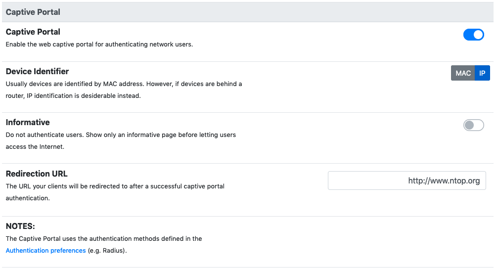

Пленный портал
nEdge может предоставить адаптивный портал для аутентификации устройств. Новые устройства будут не может получить доступ к rest сети, если не пройдет успешную аутентификацию через веб-портал Captive. Устройства, уже принадлежащие пользователю nEdge, не будут необходимо пройти аутентификацию еще раз.
Перенаправление на авторизованный портал обычно происходит автоматически, когда устройство сначала подключается к сети.

Уведомление о входе в портал Android
Предупреждение
На Windows 10 хостах с браузером Chrome авторизованный портал обнаруживается только при подключен к сети Wi-Fi.
Captive-портал, по сути, предоставляет способ связать устройство с пользователем nEdge. После успешного связывания политики, определенные для данного пользователя, будут быть применен к устройству. Учетные данные доступа для авторизованного портала — это те, которые настроены в пользователи страница. Также требуется маркировка устройства. Хотя это свободное поле, пользователь ожидается вставка строки для описания его устройства, например. Ноутбук Джо.
После успешной аутентификации устройство будет перенаправлено в Интернет. А индивидуальный URL-адрес перенаправления можно настроить для перенаправления устройств на определенный веб-сайт.

Настройки авторизованного портала
Если оставить поле пустым, устройства будут перенаправлены на исходный веб-сайт. они пытались посетить его до входа в портал.
Идентификатор устройства определяет, как новые устройства аутентифицируются на перехватчике портал будет добавлен соответствующему пользователю. Обычно желательно добавьте устройства через их MAC-адрес, поскольку он привязан к конкретному устройству. Однако, когда устройства подключены к маршрутизатору (не простому коммутатору, маршрутизатор является их шлюз по умолчанию) до достижения устройства nEdge их MAC-адрес будет скрыт по MAC-адресу маршрутизатора, и nEdge всегда будет видеть один и тот же MAC-адрес, поэтому пленный портал будет бесполезен. В этом случае идентификация на основе IP должна использоваться, чтобы IP-адрес использовался вместо MAC. Это предполагает, что каждый устройство имеет собственный фиксированный IP-адрес, поэтому оно не будет работать должным образом с DHCP.
Выход пользователя
Однако отключение устройства путем явного выхода из системы обычно не требуется.
если пользователь nEdge хочет отключиться от устройства, это возможно
через http://<Captive Portal IP>:3000/lua/logout.lua страница из
браузер.
Информативный Captive-портал
Кептивный портал также может работать в информационном режиме. Нет пользователя аутентификация осуществляется в информативном режиме. Информационная страница просто показывается вновь подключившимся пользователям, чтобы ознакомить их с условиями и условия предоставляемого доступа в Интернет. Пользователи будут иметь возможность доступа в Интернет после принятия представленных условий и условия.
Активные пользователи будут вынуждены возобновить свое согласие с условиями и условия каждый день. Неактивным пользователям будет представлен информативную страницу, как только они станут активными и попытаются получить доступ к Интернет снова.
Выборочный пленочный портал
Можно отключить авторизованный портал для определенных устройств или сети. сегменты. Проверьте пользовательская документация для более подробной информации.
Примечание
При такой настройке, поскольку маршрутизаторы маскируют MAC-адреса устройств, необходимо изменить Идентификатор устройства от настроек авторизованного портала до «IP» для того, чтобы это работало правильно.
Radius Интеграция
nEdge может использовать внешний сервер RADIUS для аутентификации пользователей авторизованного портала. а также GUI пользователей. Посмотрите ntopng документация по аутентификации пользователя для подробнее.
Примечание
Если RADIUS используется для авторизованной аутентификации портала, только настроенный пользователи nEdge сможет пройти аутентификацию. Это ограничение необходимо, поскольку пользователь привык свяжите устройство с политикой.